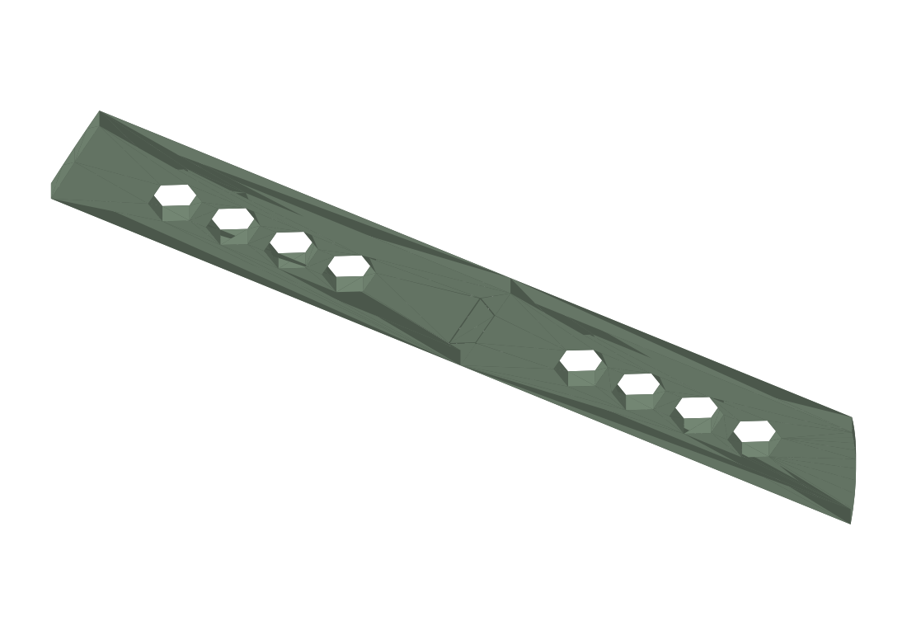

Joint fit approved
Stile V13Cabinet door templates
Rail
Stile
Stile V13

Model preview
Print & assembly notes
Two halves arranged flat for the P1S. The recorded slice is about 2 h 40 min and 141.3 g.
Validation
Uses the exact mating surfaces of the approved V12 .05 coupon. Full-template strength remains untested. Keep V13 halves together.
Project files & revisions
Earlier revisions and alternatives.
Original datasheets 26
- designs/continuous-sweep/rails/revisions/half-inch
- designs/continuous-sweep/rails/revisions/v2
- designs/elliptical/rails/revisions/honeycomb-half-inch
- designs/elliptical/rails/revisions/honeycomb-v1
- designs/elliptical/rails/revisions/honeycomb-v2
- designs/elliptical/rails/revisions/honeycomb-v3
- designs/elliptical/rails/revisions/solid-half-inch
- designs/elliptical/rails/revisions/solid
- designs/elliptical/rails/revisions/v10
- designs/elliptical/rails/revisions/v4
- designs/elliptical/rails/revisions/v5
- designs/elliptical/rails/revisions/v6
- designs/elliptical/rails/revisions/v7
- designs/elliptical/rails/revisions/v8
- designs/elliptical/rails/revisions/v9
- designs/elliptical/stiles/revisions/dovetail-half-inch
- designs/elliptical/stiles/revisions/half-inch
- designs/elliptical/stiles/revisions/v1
- designs/elliptical/stiles/revisions/v10
- designs/elliptical/stiles/revisions/v11
- designs/elliptical/stiles/revisions/v12
- designs/elliptical/stiles/revisions/v13
- designs/elliptical/stiles/revisions/v2
- designs/elliptical/stiles/revisions/v9
- designs/original-circles/rails/revisions/half-inch
- designs/original-circles/rails/revisions/v1
Additional model files 215
3MFdesigns/continuous-sweep/rails/revisions/half-inch/models/rail-template-continuous-sweep-half-inch.3mf3 KBSTEPdesigns/continuous-sweep/rails/revisions/half-inch/models/rail-template-continuous-sweep-half-inch.step22 KBSTLdesigns/continuous-sweep/rails/revisions/half-inch/models/rail-template-continuous-sweep-half-inch.stl18 KB3MFdesigns/continuous-sweep/rails/revisions/v2/models/rail-template-smooth-v2.3mf24 KBSTEPdesigns/continuous-sweep/rails/revisions/v2/models/rail-template-smooth-v2.step17 KBSTLdesigns/continuous-sweep/rails/revisions/v2/models/rail-template-smooth-v2.stl88 KB3MFdesigns/elliptical/rails/revisions/honeycomb-half-inch/models/rail-template-elliptical-honeycomb-half-inch.3mf6 KBSTEPdesigns/elliptical/rails/revisions/honeycomb-half-inch/models/rail-template-elliptical-honeycomb-half-inch.step309 KBSTLdesigns/elliptical/rails/revisions/honeycomb-half-inch/models/rail-template-elliptical-honeycomb-half-inch.stl75 KB3MFdesigns/elliptical/rails/revisions/honeycomb-v1/models/rail-template-elliptical-honeycomb.3mf26 KBSTEPdesigns/elliptical/rails/revisions/honeycomb-v1/models/rail-template-elliptical-honeycomb.step285 KBSTLdesigns/elliptical/rails/revisions/honeycomb-v1/models/rail-template-elliptical-honeycomb.stl106 KB3MFdesigns/elliptical/rails/revisions/honeycomb-v2/models/rail-template-elliptical-honeycomb-v2.3mf26 KBSTEPdesigns/elliptical/rails/revisions/honeycomb-v2/models/rail-template-elliptical-honeycomb-v2.step285 KBSTLdesigns/elliptical/rails/revisions/honeycomb-v2/models/rail-template-elliptical-honeycomb-v2.stl106 KB3MFdesigns/elliptical/rails/revisions/honeycomb-v3/models/rail-template-elliptical-honeycomb-v3.3mf26 KBSTEPdesigns/elliptical/rails/revisions/honeycomb-v3/models/rail-template-elliptical-honeycomb-v3.step285 KBSTLdesigns/elliptical/rails/revisions/honeycomb-v3/models/rail-template-elliptical-honeycomb-v3.stl106 KB3MFdesigns/elliptical/rails/revisions/solid-half-inch/models/rail-template-elliptical-solid-half-inch.3mf3 KBSTEPdesigns/elliptical/rails/revisions/solid-half-inch/models/rail-template-elliptical-solid-half-inch.step27 KBSTLdesigns/elliptical/rails/revisions/solid-half-inch/models/rail-template-elliptical-solid-half-inch.stl20 KB3MFdesigns/elliptical/rails/revisions/solid/models/rail-template-elliptical.3mf22 KBSTEPdesigns/elliptical/rails/revisions/solid/models/rail-template-elliptical.step17 KBSTLdesigns/elliptical/rails/revisions/solid/models/rail-template-elliptical.stl89 KBSTEPdesigns/elliptical/rails/revisions/v10/models/rail-native-v10-left-socket.step247 KBSTLdesigns/elliptical/rails/revisions/v10/models/rail-native-v10-left-socket.stl2.1 MBSTEPdesigns/elliptical/rails/revisions/v10/models/rail-native-v10-right-tongue.step359 KBSTLdesigns/elliptical/rails/revisions/v10/models/rail-native-v10-right-tongue.stl7.3 MB3MFdesigns/elliptical/rails/revisions/v10/models/rail-template-elliptical-honeycomb-v10.3mf6 KBSTEPdesigns/elliptical/rails/revisions/v10/models/rail-template-elliptical-honeycomb-v10.step316 KBSTLdesigns/elliptical/rails/revisions/v10/models/rail-template-elliptical-honeycomb-v10.stl87 KB3MFdesigns/elliptical/rails/revisions/v10/models/rail-template-native-dovetail-v10-sliced.3mf1.7 MB3MFdesigns/elliptical/rails/revisions/v10/models/rail-template-native-dovetail-v10.3mf613 KB3MFdesigns/elliptical/rails/revisions/v4/models/rail-template-dovetail-v4-bambu.3mf61 KB3MFdesigns/elliptical/rails/revisions/v4/models/rail-template-dovetail-v4-left.3mf6 KBSTEPdesigns/elliptical/rails/revisions/v4/models/rail-template-dovetail-v4-left.step124 KBSTLdesigns/elliptical/rails/revisions/v4/models/rail-template-dovetail-v4-left.stl22 KB3MFdesigns/elliptical/rails/revisions/v4/models/rail-template-dovetail-v4-right.3mf21 KBSTEPdesigns/elliptical/rails/revisions/v4/models/rail-template-dovetail-v4-right.step214 KBSTLdesigns/elliptical/rails/revisions/v4/models/rail-template-dovetail-v4-right.stl83 KB3MFdesigns/elliptical/rails/revisions/v4/models/rail-template-dovetail-v4.3mf26 KB3MFdesigns/elliptical/rails/revisions/v5/fit-test/rail-native-dovetail-v5-fit-test-sliced.3mf136 KB3MFdesigns/elliptical/rails/revisions/v5/fit-test/rail-native-dovetail-v5-fit-test.3mf14 KBSTLdesigns/elliptical/rails/revisions/v5/fit-test/rail-native-v5-test-left-socket.stl2 KBSTLdesigns/elliptical/rails/revisions/v5/fit-test/rail-native-v5-test-right-tongue.stl1 KBSTLdesigns/elliptical/rails/revisions/v5/models/rail-native-v5-left-socket.stl31 KBSTLdesigns/elliptical/rails/revisions/v5/models/rail-native-v5-right-tongue.stl84 KB3MFdesigns/elliptical/rails/revisions/v5/models/rail-template-native-dovetail-v5-bambu.3mf37 KB3MFdesigns/elliptical/rails/revisions/v5/models/rail-template-native-dovetail-v5-sliced.3mf1.6 MB3MFdesigns/elliptical/rails/revisions/v5/native-source/native-cut-project.3mf74 KBSTLdesigns/elliptical/rails/revisions/v5/native-source/obj_1_rail-template-elliptical-honeycomb-v3.stl_A.stl106 KBSTLdesigns/elliptical/rails/revisions/v5/native-source/obj_2_rail-template-elliptical-honeycomb-v3.stl_B.stl59 KB3MFdesigns/elliptical/rails/revisions/v6/fit-test/rail-native-dovetail-v6-fit-test-sliced.3mf137 KB3MFdesigns/elliptical/rails/revisions/v6/fit-test/rail-native-dovetail-v6-fit-test.3mf14 KBSTLdesigns/elliptical/rails/revisions/v6/fit-test/rail-native-v6-test-left-socket.stl2 KBSTLdesigns/elliptical/rails/revisions/v6/fit-test/rail-native-v6-test-right-tongue.stl1 KBSTLdesigns/elliptical/rails/revisions/v6/models/rail-native-v6-left-socket.stl31 KBSTLdesigns/elliptical/rails/revisions/v6/models/rail-native-v6-right-tongue.stl83 KB3MFdesigns/elliptical/rails/revisions/v6/models/rail-template-native-dovetail-v6-bambu.3mf38 KB3MFdesigns/elliptical/rails/revisions/v6/models/rail-template-native-dovetail-v6-sliced.3mf1.6 MB3MFdesigns/elliptical/rails/revisions/v6/native-source/native-cut-project.3mf63 KB3MFdesigns/elliptical/rails/revisions/v7/fit-test/rail-native-dovetail-v7-fit-test-sliced.3mf527 KB3MFdesigns/elliptical/rails/revisions/v7/fit-test/rail-native-dovetail-v7-fit-test.3mf339 KBSTLdesigns/elliptical/rails/revisions/v7/fit-test/rail-native-dovetail-v7-fit-test.stl6.1 MBSTLdesigns/elliptical/rails/revisions/v7/fit-test/rail-native-v7-test-left-socket.stl2.1 MBSTLdesigns/elliptical/rails/revisions/v7/fit-test/rail-native-v7-test-right-tongue.stl5.1 MBSTEPdesigns/elliptical/rails/revisions/v7/models/rail-native-v7-left-socket.step216 KBSTLdesigns/elliptical/rails/revisions/v7/models/rail-native-v7-left-socket.stl2.1 MBSTEPdesigns/elliptical/rails/revisions/v7/models/rail-native-v7-right-tongue.step368 KBSTLdesigns/elliptical/rails/revisions/v7/models/rail-native-v7-right-tongue.stl7.4 MB3MFdesigns/elliptical/rails/revisions/v7/models/rail-template-native-dovetail-v7-bambu.3mf435 KB3MFdesigns/elliptical/rails/revisions/v7/models/rail-template-native-dovetail-v7-sliced.3mf1.7 MB3MFdesigns/elliptical/rails/revisions/v8/fit-test/rail-native-dovetail-v8-fit-test-sliced.3mf524 KB3MFdesigns/elliptical/rails/revisions/v8/fit-test/rail-native-dovetail-v8-fit-test.3mf340 KBSTLdesigns/elliptical/rails/revisions/v8/fit-test/rail-native-dovetail-v8-fit-test.stl1.2 MBSTLdesigns/elliptical/rails/revisions/v8/fit-test/rail-native-v8-test-left-socket.stl2.1 MBSTLdesigns/elliptical/rails/revisions/v8/fit-test/rail-native-v8-test-right-tongue.stl5.1 MBSTEPdesigns/elliptical/rails/revisions/v8/models/rail-native-v8-left-socket.step217 KBSTLdesigns/elliptical/rails/revisions/v8/models/rail-native-v8-left-socket.stl2.1 MBSTEPdesigns/elliptical/rails/revisions/v8/models/rail-native-v8-right-tongue.step368 KBSTLdesigns/elliptical/rails/revisions/v8/models/rail-native-v8-right-tongue.stl7.4 MB3MFdesigns/elliptical/rails/revisions/v8/models/rail-template-native-dovetail-v8-bambu.3mf435 KB3MFdesigns/elliptical/rails/revisions/v8/models/rail-template-native-dovetail-v8-sliced.3mf1.7 MB3MFdesigns/elliptical/rails/revisions/v9/fit-test/rail-native-dovetail-v9-fit-test-sliced.3mf528 KBSTLdesigns/elliptical/rails/revisions/v9/fit-test/rail-native-v9-test-left-socket.stl2.1 MBSTLdesigns/elliptical/rails/revisions/v9/fit-test/rail-native-v9-test-right-tongue.stl5.1 MBSTEPdesigns/elliptical/rails/revisions/v9/models/rail-native-v9-left-socket.step216 KBSTLdesigns/elliptical/rails/revisions/v9/models/rail-native-v9-left-socket.stl2.1 MBSTEPdesigns/elliptical/rails/revisions/v9/models/rail-native-v9-right-tongue.step368 KBSTLdesigns/elliptical/rails/revisions/v9/models/rail-native-v9-right-tongue.stl7.4 MB3MFdesigns/elliptical/rails/revisions/v9/models/rail-template-native-dovetail-v9-bambu.3mf435 KB3MFdesigns/elliptical/rails/revisions/v9/models/rail-template-native-dovetail-v9-sliced.3mf1.7 MB3MFdesigns/elliptical/rails/revisions/v9/models/rail-template-native-dovetail-v9.3mf616 KBSTEPdesigns/elliptical/rails/revisions/v9/models/rail-template-native-dovetail-v9.step573 KBSTLdesigns/elliptical/rails/revisions/v9/models/rail-template-native-dovetail-v9.stl1.6 MB3MFdesigns/elliptical/stiles/revisions/dovetail-half-inch/models/stile-template-left-dovetail-half-inch-bambu.3mf17 KB3MFdesigns/elliptical/stiles/revisions/dovetail-half-inch/models/stile-template-left-dovetail-half-inch-sliced.3mf837 KBSTEPdesigns/elliptical/stiles/revisions/dovetail-half-inch/models/stile-template-left-dovetail-half-inch-socket.step133 KBSTLdesigns/elliptical/stiles/revisions/dovetail-half-inch/models/stile-template-left-dovetail-half-inch-socket.stl38 KBSTEPdesigns/elliptical/stiles/revisions/dovetail-half-inch/models/stile-template-left-dovetail-half-inch-tongue.step129 KBSTLdesigns/elliptical/stiles/revisions/dovetail-half-inch/models/stile-template-left-dovetail-half-inch-tongue.stl25 KB3MFdesigns/elliptical/stiles/revisions/half-inch/models/stile-template-left-half-inch.3mf4 KBSTEPdesigns/elliptical/stiles/revisions/half-inch/models/stile-template-left-half-inch.step213 KBSTLdesigns/elliptical/stiles/revisions/half-inch/models/stile-template-left-half-inch.stl54 KB3MFdesigns/elliptical/stiles/revisions/half-inch/models/stile-template-right-half-inch.3mf4 KBSTEPdesigns/elliptical/stiles/revisions/half-inch/models/stile-template-right-half-inch.step217 KBSTLdesigns/elliptical/stiles/revisions/half-inch/models/stile-template-right-half-inch.stl58 KB3MFdesigns/elliptical/stiles/revisions/v1/models/stile-template-left-v1.3mf14 KBSTEPdesigns/elliptical/stiles/revisions/v1/models/stile-template-left-v1.step197 KBSTLdesigns/elliptical/stiles/revisions/v1/models/stile-template-left-v1.stl57 KB3MFdesigns/elliptical/stiles/revisions/v1/models/stile-template-right-v1.3mf14 KBSTEPdesigns/elliptical/stiles/revisions/v1/models/stile-template-right-v1.step198 KBSTLdesigns/elliptical/stiles/revisions/v1/models/stile-template-right-v1.stl57 KB3MFdesigns/elliptical/stiles/revisions/v10/fit-test/stile-dovetail-v10-fit-test-bambu.3mf441 KB3MFdesigns/elliptical/stiles/revisions/v10/fit-test/stile-dovetail-v10-fit-test-sliced.3mf611 KBSTEPdesigns/elliptical/stiles/revisions/v10/fit-test/stile-dovetail-v10-fit-test-socket.step111 KBSTLdesigns/elliptical/stiles/revisions/v10/fit-test/stile-dovetail-v10-fit-test-socket.stl2.1 MBSTEPdesigns/elliptical/stiles/revisions/v10/fit-test/stile-dovetail-v10-fit-test-tongue.step153 KBSTLdesigns/elliptical/stiles/revisions/v10/fit-test/stile-dovetail-v10-fit-test-tongue.stl7.4 MB3MFdesigns/elliptical/stiles/revisions/v10/fit-test/stile-dovetail-v10-fit-test.3mf614 KBSTEPdesigns/elliptical/stiles/revisions/v10/fit-test/stile-dovetail-v10-fit-test.step268 KBSTLdesigns/elliptical/stiles/revisions/v10/fit-test/stile-dovetail-v10-fit-test.stl1.6 MB3MFdesigns/elliptical/stiles/revisions/v10/models/stile-template-left-dovetail-v10-bambu.3mf423 KB3MFdesigns/elliptical/stiles/revisions/v10/models/stile-template-left-dovetail-v10-sliced.3mf1.3 MBSTEPdesigns/elliptical/stiles/revisions/v10/models/stile-template-left-dovetail-v10-socket.step205 KBSTLdesigns/elliptical/stiles/revisions/v10/models/stile-template-left-dovetail-v10-socket.stl2.1 MBSTEPdesigns/elliptical/stiles/revisions/v10/models/stile-template-left-dovetail-v10-tongue.step249 KBSTLdesigns/elliptical/stiles/revisions/v10/models/stile-template-left-dovetail-v10-tongue.stl7.4 MB3MFdesigns/elliptical/stiles/revisions/v10/models/stile-template-left-dovetail-v10.3mf617 KBSTEPdesigns/elliptical/stiles/revisions/v10/models/stile-template-left-dovetail-v10.step458 KBSTLdesigns/elliptical/stiles/revisions/v10/models/stile-template-left-dovetail-v10.stl1.6 MB3MFdesigns/elliptical/stiles/revisions/v11/fit-test/stile-dovetail-v11-010-bambu.3mf478 KBSTEPdesigns/elliptical/stiles/revisions/v11/fit-test/stile-dovetail-v11-010-socket.step291 KBSTLdesigns/elliptical/stiles/revisions/v11/fit-test/stile-dovetail-v11-010-socket.stl2.9 MBSTEPdesigns/elliptical/stiles/revisions/v11/fit-test/stile-dovetail-v11-010-tongue.step165 KBSTLdesigns/elliptical/stiles/revisions/v11/fit-test/stile-dovetail-v11-010-tongue.stl7.4 MB3MFdesigns/elliptical/stiles/revisions/v11/fit-test/stile-dovetail-v11-010.3mf661 KBSTEPdesigns/elliptical/stiles/revisions/v11/fit-test/stile-dovetail-v11-010.step461 KBSTLdesigns/elliptical/stiles/revisions/v11/fit-test/stile-dovetail-v11-010.stl1.8 MB3MFdesigns/elliptical/stiles/revisions/v11/fit-test/stile-dovetail-v11-015-bambu.3mf475 KBSTEPdesigns/elliptical/stiles/revisions/v11/fit-test/stile-dovetail-v11-015-socket.step286 KBSTLdesigns/elliptical/stiles/revisions/v11/fit-test/stile-dovetail-v11-015-socket.stl2.8 MBSTEPdesigns/elliptical/stiles/revisions/v11/fit-test/stile-dovetail-v11-015-tongue.step165 KBSTLdesigns/elliptical/stiles/revisions/v11/fit-test/stile-dovetail-v11-015-tongue.stl7.4 MB3MFdesigns/elliptical/stiles/revisions/v11/fit-test/stile-dovetail-v11-015.3mf657 KBSTEPdesigns/elliptical/stiles/revisions/v11/fit-test/stile-dovetail-v11-015.step455 KBSTLdesigns/elliptical/stiles/revisions/v11/fit-test/stile-dovetail-v11-015.stl1.8 MB3MFdesigns/elliptical/stiles/revisions/v11/fit-test/stile-dovetail-v11-comparison-bambu.3mf940 KB3MFdesigns/elliptical/stiles/revisions/v11/fit-test/stile-dovetail-v11-comparison-sliced.3mf1.3 MB3MFdesigns/elliptical/stiles/revisions/v11/fit-test/stile-dovetail-v11-comparison.3mf942 KBSTEPdesigns/elliptical/stiles/revisions/v11/fit-test/stile-dovetail-v11-comparison.step947 KBSTLdesigns/elliptical/stiles/revisions/v11/fit-test/stile-dovetail-v11-comparison.stl3.6 MB3MFdesigns/elliptical/stiles/revisions/v12/fit-test/stile-dovetail-v12-000-bambu.3mf506 KBSTEPdesigns/elliptical/stiles/revisions/v12/fit-test/stile-dovetail-v12-000-socket.step373 KBSTLdesigns/elliptical/stiles/revisions/v12/fit-test/stile-dovetail-v12-000-socket.stl3.5 MBSTEPdesigns/elliptical/stiles/revisions/v12/fit-test/stile-dovetail-v12-000-tongue.step165 KBSTLdesigns/elliptical/stiles/revisions/v12/fit-test/stile-dovetail-v12-000-tongue.stl7.4 MB3MFdesigns/elliptical/stiles/revisions/v12/fit-test/stile-dovetail-v12-000.3mf698 KBSTEPdesigns/elliptical/stiles/revisions/v12/fit-test/stile-dovetail-v12-000.step543 KBSTLdesigns/elliptical/stiles/revisions/v12/fit-test/stile-dovetail-v12-000.stl1.9 MB3MFdesigns/elliptical/stiles/revisions/v12/fit-test/stile-dovetail-v12-005-bambu.3mf506 KBSTEPdesigns/elliptical/stiles/revisions/v12/fit-test/stile-dovetail-v12-005-socket.step369 KBSTLdesigns/elliptical/stiles/revisions/v12/fit-test/stile-dovetail-v12-005-socket.stl3.5 MBSTEPdesigns/elliptical/stiles/revisions/v12/fit-test/stile-dovetail-v12-005-tongue.step165 KBSTLdesigns/elliptical/stiles/revisions/v12/fit-test/stile-dovetail-v12-005-tongue.stl7.4 MB3MFdesigns/elliptical/stiles/revisions/v12/fit-test/stile-dovetail-v12-005.3mf697 KBSTEPdesigns/elliptical/stiles/revisions/v12/fit-test/stile-dovetail-v12-005.step539 KBSTLdesigns/elliptical/stiles/revisions/v12/fit-test/stile-dovetail-v12-005.stl1.9 MB3MFdesigns/elliptical/stiles/revisions/v12/fit-test/stile-dovetail-v12-comparison-bambu.3mf999 KB3MFdesigns/elliptical/stiles/revisions/v12/fit-test/stile-dovetail-v12-comparison-sliced.3mf1.3 MB3MFdesigns/elliptical/stiles/revisions/v12/fit-test/stile-dovetail-v12-comparison.3mf1.0 MBSTEPdesigns/elliptical/stiles/revisions/v12/fit-test/stile-dovetail-v12-comparison.step1.1 MBSTLdesigns/elliptical/stiles/revisions/v12/fit-test/stile-dovetail-v12-comparison.stl3.8 MB3MFdesigns/elliptical/stiles/revisions/v12/fit-test/stile-dovetail-v12-sockets-bambu.3mf346 KB3MFdesigns/elliptical/stiles/revisions/v12/fit-test/stile-dovetail-v12-sockets-sliced.3mf517 KB3MFdesigns/elliptical/stiles/revisions/v12/fit-test/stile-dovetail-v12-sockets.3mf338 KBSTEPdesigns/elliptical/stiles/revisions/v12/fit-test/stile-dovetail-v12-sockets.step779 KBSTLdesigns/elliptical/stiles/revisions/v12/fit-test/stile-dovetail-v12-sockets.stl1.3 MB3MFdesigns/elliptical/stiles/revisions/v13/fit-test/stile-dovetail-v13-fit-test-sliced.3mf611 KBSTEPdesigns/elliptical/stiles/revisions/v13/fit-test/stile-dovetail-v13-fit-test-socket.step111 KBSTLdesigns/elliptical/stiles/revisions/v13/fit-test/stile-dovetail-v13-fit-test-socket.stl2.1 MBSTEPdesigns/elliptical/stiles/revisions/v13/fit-test/stile-dovetail-v13-fit-test-tongue.step153 KBSTLdesigns/elliptical/stiles/revisions/v13/fit-test/stile-dovetail-v13-fit-test-tongue.stl7.4 MB3MFdesigns/elliptical/stiles/revisions/v13/fit-test/stile-dovetail-v13-fit-test.3mf614 KB3MFdesigns/elliptical/stiles/revisions/v13/models/stile-template-left-dovetail-v13-sliced.3mf1.3 MBSTEPdesigns/elliptical/stiles/revisions/v13/models/stile-template-left-dovetail-v13-socket.step205 KBSTLdesigns/elliptical/stiles/revisions/v13/models/stile-template-left-dovetail-v13-socket.stl2.1 MBSTEPdesigns/elliptical/stiles/revisions/v13/models/stile-template-left-dovetail-v13-tongue.step249 KBSTLdesigns/elliptical/stiles/revisions/v13/models/stile-template-left-dovetail-v13-tongue.stl7.4 MB3MFdesigns/elliptical/stiles/revisions/v13/models/stile-template-left-dovetail-v13.3mf617 KB3MFdesigns/elliptical/stiles/revisions/v2/models/stile-template-left-dovetail-v2-bambu.3mf48 KB3MFdesigns/elliptical/stiles/revisions/v2/models/stile-template-left-dovetail-v2-plate.3mf15 KB3MFdesigns/elliptical/stiles/revisions/v2/models/stile-template-left-dovetail-v2-socket.3mf13 KBSTEPdesigns/elliptical/stiles/revisions/v2/models/stile-template-left-dovetail-v2-socket.step124 KBSTLdesigns/elliptical/stiles/revisions/v2/models/stile-template-left-dovetail-v2-socket.stl49 KB3MFdesigns/elliptical/stiles/revisions/v2/models/stile-template-left-dovetail-v2-tongue.3mf3 KBSTEPdesigns/elliptical/stiles/revisions/v2/models/stile-template-left-dovetail-v2-tongue.step124 KBSTLdesigns/elliptical/stiles/revisions/v2/models/stile-template-left-dovetail-v2-tongue.stl10 KB3MFdesigns/elliptical/stiles/revisions/v2/models/stile-template-left-dovetail-v2.3mf15 KB3MFdesigns/elliptical/stiles/revisions/v2/native-source/stile-template-left-dovetail-v2-before-arrangement.3mf53 KB3MFdesigns/elliptical/stiles/revisions/v9/models/stile-template-left-dovetail-v9-bambu.3mf422 KB3MFdesigns/elliptical/stiles/revisions/v9/models/stile-template-left-dovetail-v9-sliced.3mf1.3 MBSTEPdesigns/elliptical/stiles/revisions/v9/models/stile-template-left-dovetail-v9-socket.step202 KBSTLdesigns/elliptical/stiles/revisions/v9/models/stile-template-left-dovetail-v9-socket.stl2.1 MBSTEPdesigns/elliptical/stiles/revisions/v9/models/stile-template-left-dovetail-v9-tongue.step264 KBSTLdesigns/elliptical/stiles/revisions/v9/models/stile-template-left-dovetail-v9-tongue.stl7.3 MB3MFdesigns/elliptical/stiles/revisions/v9/models/stile-template-left-dovetail-v9.3mf616 KBSTEPdesigns/elliptical/stiles/revisions/v9/models/stile-template-left-dovetail-v9.step470 KBSTLdesigns/elliptical/stiles/revisions/v9/models/stile-template-left-dovetail-v9.stl1.6 MB3MFdesigns/original-circles/rails/revisions/half-inch/models/rail-template-original-circles-half-inch.3mf2 KBSTEPdesigns/original-circles/rails/revisions/half-inch/models/rail-template-original-circles-half-inch.step23 KBSTLdesigns/original-circles/rails/revisions/half-inch/models/rail-template-original-circles-half-inch.stl15 KB3MFdesigns/original-circles/rails/revisions/v1/models/rail-template.3mf15 KBSTEPdesigns/original-circles/rails/revisions/v1/models/rail-template.step23 KBSTLdesigns/original-circles/rails/revisions/v1/models/rail-template.stl56 KB